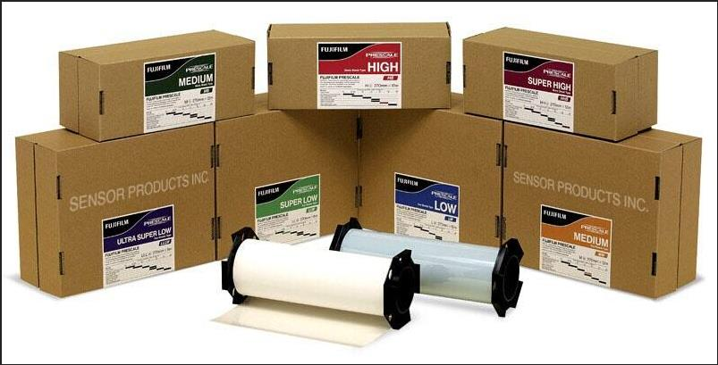

富士 Prescale 感压纸
相比仅凭试产结果评价压力，Prescale 胶片可更直观地检查压力分布，帮助快速调整机械设置。
Process Materials
用于热压绑定过程中的压力验证、温度缓冲、导热隔离与防静电保护。

相比仅凭试产结果评价压力，Prescale 胶片可更直观地检查压力分布，帮助快速调整机械设置。
提升质量、缩短调机时间；出现质量缺陷时，可通过压力与压力分布检查机械状态，辅助定位问题原因。
超高压 HHS 270*12 单片型；高压 HS 270*12 单片型；中压 MS 270*12 单片型；低压 LW 270*12 双片型；超低压 LLW 270*6 双片型；特超低压 LLLW 270*5 双片型；微压 4LW 310*3 双片型。
推荐温度 20℃-35℃，推荐湿度 35%-80%RH；精度通常为 ±10% 或更小，具体以产品类型和使用条件为准。
以特殊硅胶为基材并加入高导热材料制成，表面光滑、厚度均匀，适合作为 FOG 等热压绑定工艺中的缓冲、导热垫片。
适用于显示屏热压邦定、绝缘半导体热传导、电热调节器和温度传感器，具备传热、耐热、抗静电和压力一致性优势。
Ready to quote
联系 黄工，提供结构、型号、胶宽、卷长和应用场景，我们会尽快协助确认。